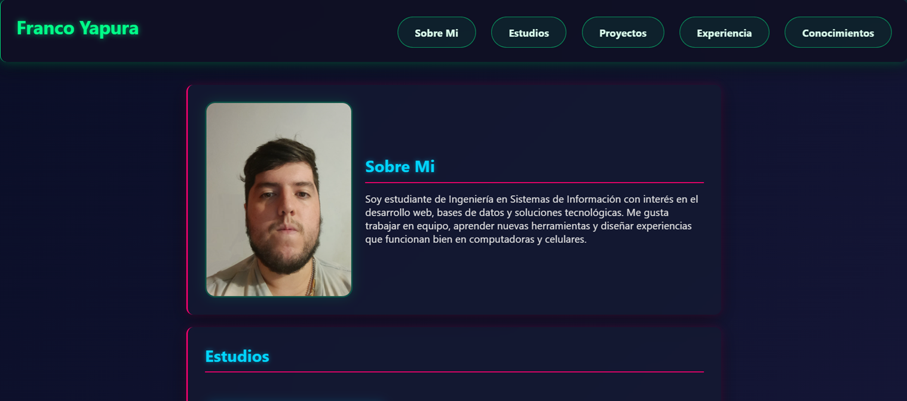
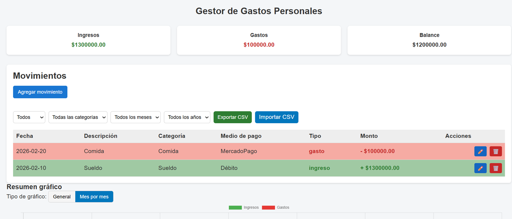
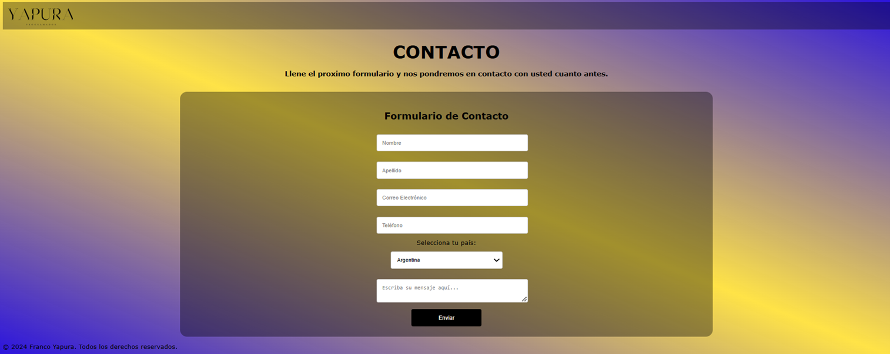
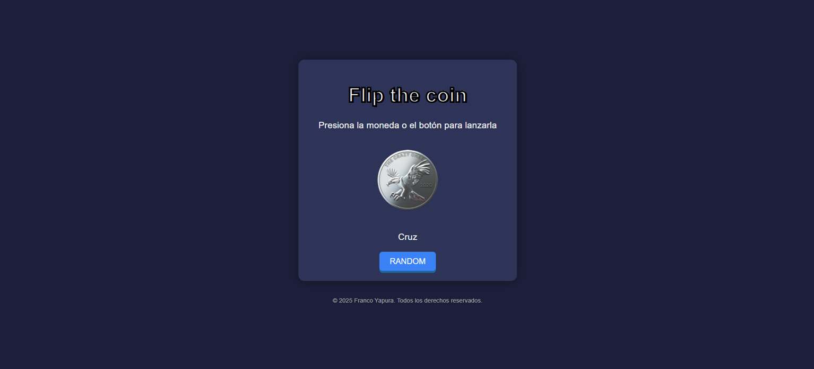
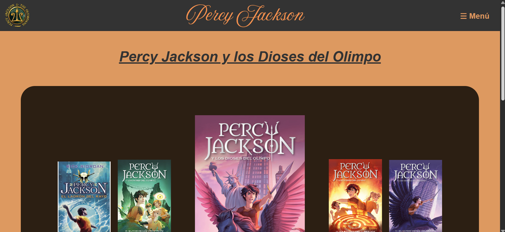

Sobre Mi
Soy estudiante de Ingeniería en Sistemas de Información con interés en el desarrollo web, bases de datos y soluciones tecnológicas. Me gusta trabajar en equipo, aprender nuevas herramientas y diseñar experiencias que funcionan bien en computadoras y celulares.
Estudios
Ingeniería en Sistemas de Información
Universidad Tecnológica Nacional - 2023 - Actualidad
Proyectos

Portfolio Web
Sitio web personal responsive desarrollado con HTML, CSS y JavaScript.
HTML • CSS • JavaScript
Gestor de Datos
Aplicación web para registrar ingresos y gastos, visualizar el balance financiero y llevar un control organizado de las finanzas personales.
HTML • CSS • JavaScript
Sitio de Contacto
Página web de contacto con formulario para envío de mensajes, diseñada de manera responsive y enfocada en la experiencia del usuario.
HTML • CSS • JavaScript
Cara o Cruz
Página interactiva que simula el lanzamiento de una moneda mediante una animación de giro, mostrando aleatoriamente cara o cruz.
HTML • CSS • JavaScript
Fan Page de Percy Jackson
Sitio temático dedicado al universo de Percy Jackson con información sobre libros, películas, personajes y curiosidades de la saga.
HTML • CSS • JavaScriptExperiencia Laboral
Experiencia desarrollada en comunicación, creación de contenido digital, atención al cliente y trabajo en equipo, fortaleciendo competencias de organización, adaptación, resolución de problemas y gestión de tareas.
Editor de Video | La Gaceta del Fútbol
Contenido Digital y Producción AudiovisualEdición y producción de contenido para YouTube, gestionando material audiovisual, tiempos de entrega y optimización de videos para plataformas digitales.
Editor de Video | FP_Training
Contenido para Redes SocialesCreación y edición de reels para Instagram, aplicando criterios de comunicación visual, organización de contenido y adaptación a distintos formatos digitales.
Columnista Deportivo | Radio Show AM 1130 - "Toco y me Voy"
Comunicación y Análisis de InformaciónInvestigación, análisis y presentación de información sobre fútbol nacional e internacional, desarrollando habilidades de comunicación, síntesis y trabajo bajo plazos establecidos.
Ilaria Resto Bar
Atención al ClienteGestión de atención al público, coordinación de tareas en equipo, manejo de cobros y resolución de situaciones operativas en un entorno dinámico orientado al servicio.
Donuts Maker Bakery
Operaciones y Atención al ClienteParticipación en múltiples áreas operativas del negocio, incluyendo atención al cliente, coordinación con proveedores, control de tareas diarias y mantenimiento de estándares de calidad.
Conocimientos y Habilidades
Programación
- C++
- JavaScript
- HTML5
- CSS3
- Programación Orientada a Objetos (POO)
- Estructuras de Datos
Bases de Datos
- SQL
- MySQL
- Consultas, JOINs y Agregaciones
- Modelado básico de datos
Desarrollo Web
- Diseño Responsive
- Maquetación Web
- Manipulación del DOM
- Consumo básico de APIs
- Git y GitHub
Herramientas
- Visual Studio Code
- MySQL
- Node.js
- Excel
- Adobe Premiere Pro
- Figma (nivel básico)
Habilidades Profesionales
- Resolución de Problemas
- Trabajo en Equipo
- Comunicación Efectiva
- Capacidad Analítica
- Organización y Gestión de Tareas
- Adaptabilidad y Aprendizaje Continuo
Contacto
Contactame si querés mis servicios como programador, colaboraciones o cualquier consulta.